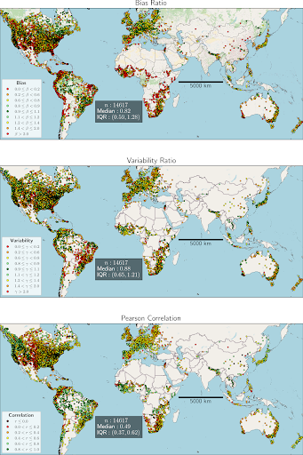
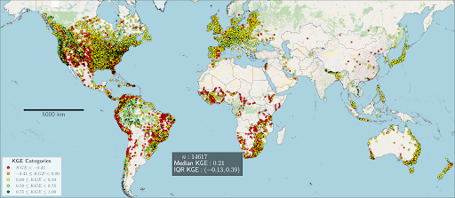
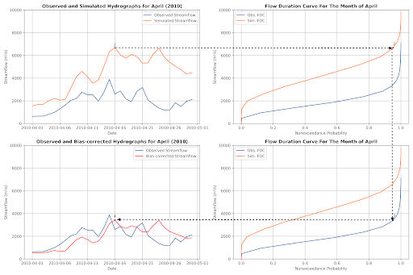
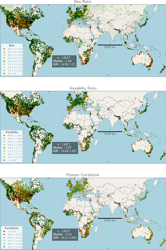
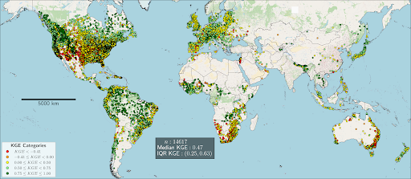
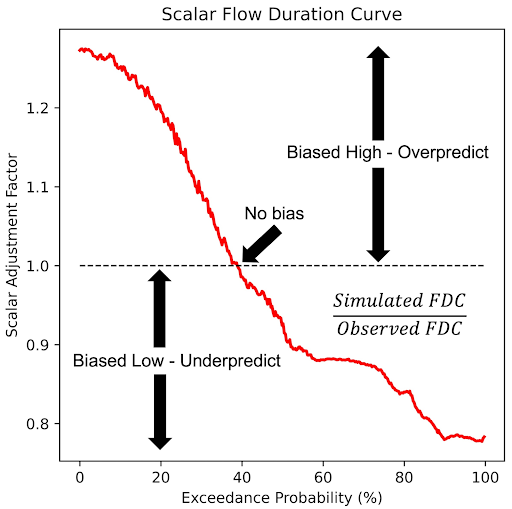

Retrospective Data & Validation
Retrospective Data
The retrospective simulation in the GEOGLOWS Model is a deterministic dataset with daily resolution, providing historical streamflow data. Version 1 of the model covers the period from 1979 to the present, while Version 2 extends the dataset back to 1940, offering over 84 years of historical data. This simulation is based on the ERA5 reanalysis, which is updated weekly, ensuring that the lag between real-time and historical data remains minimal. The retrospective data is essential for calculating return periods, understanding long-term hydrological trends, and placing current streamflow forecasts in a historical context.
Return periods, flow duration curves, daily/monthly/annual average flows
In hydrological analysis, return periods are used to estimate the probability of extreme events like floods. While the Weibull Distribution is often used to calculate return periods based on historical data, it is limited by the length of the data series and cannot predict events beyond the observed records. For the GEOGLOWS Model, the Gumbel Distribution is applied instead, as it better models extreme values and allows for extrapolation, making it possible to calculate return periods for events beyond the available data. Additionally, Flow Duration Curves (FDCs) are used to represent the percentage of time that streamflow is likely to equal or exceed certain flow rates, providing insights into the variability of water resources. The model also includes the analysis of daily seasonality to understand patterns of streamflow throughout the year, monthly seasonality to observe changes between months, and annual mean discharge to detect long-term trends. These analyses are critical for effective water resource management, flood forecasting, and understanding hydrological patterns.
To further explore the analysis of return periods, flow duration curves, and seasonal averages, we invite you to follow along with our interactive demonstration in the provided Google Colab notebook. This hands-on notebook will guide you through the process, using real data from the Wabi Uetmal River in Ethiopia. You can access and run the notebook directly in your browser:
Retrospective Demonstration Notebook
Interactive Learning- Retrospective Simulation
To dive deeper into the analysis of retrospective data, return periods, flow duration curves, and seasonal averages, we have prepared an interactive Google Colab notebook. This notebook provides step-by-step guidance for conducting these analyses using real-world data from the San Juan River at Rancho La Trinidad in Costa Rica. It covers both retrospective data and statistical flow analysis, allowing you to engage with the data and methods discussed in this guide:
Retrospective Google Colab Notebook
Observed Data- Hydroserver
We have collected observed discharge data from gauging stations worldwide, spanning diverse hydrological environments across 113 countries. This data was sourced through a combination of projects, including NASA GEOGLOWS, NASA SERVIR (SERVIR-Hindu Kush Himalaya, SERVIR-Mekong, and SERVIR-Amazonia), and the Global Runoff Data Centre (GRDC), along with direct contributions from national water resource agencies such as IDEAM (Colombia), ANA (Brazil), INAMHI (Ecuador), SENAMHI (Peru), INAMEH (Venezuela), INDRHI (Dominican Republic), BOM (Australia), WSC (Canada), and USGS (United States), among others. Each gauging station is accompanied by metadata, including Station ID, Station Name, Latitude, Longitude, and, in some cases, Stream Name. The station network is connected to the stream network through a Reach ID, assigned based on the station's proximity to the stream. The data is stored and managed using HydroServer, a platform built on the Hydrologic Information System (HIS) for collecting, managing, and sharing hydrological time series data. The observed data is accessible via HydroServer.
Validation Exercises and Results
To validate the GEOGLOWS Model, we selected gauging stations that are connected to the GEOGLOWS Model stream network and meet specific criteria. These criteria include stations paired with a GEOGLOWS reach ID, stations with at least one year of data, and stations with records available after January 1, 1979, which aligns with the start date of version 1 of the model. With the release of version 2, which extends the retrospective simulation back to January 1, 1940, we are now able to include a larger set of stations for validation. The performance of the GEOGLOWS retrospective simulation is assessed using the Kling-Gupta Efficiency (KGE) metric, which decomposes into three components: bias, variability, and correlation. This validation process ensures that the model's simulations are consistent with observed streamflow data, providing reliable information for water resource management and hydrological studies.

The three components of the Kling-Gupta efficiency (KGE)—bias, variability, and correlation—used to evaluate the performance of the GEOGLOWS retrospective simulation

Kling-Gupta efficiency (KGE) evaluating the performance of GEOGLOWS retrospective simulation
Bias Correction
The validation results underscore the importance of ongoing model evaluation and improvement to enhance the performance of the GEOGLOWS Model. Consistently addressing bias, variability, and correlation across different regions is crucial for improving the accuracy and reliability of hydrological simulations. The GEOGLOWS Hydrologic Model exhibits biases that can limit its precision, prompting the development of a bias correction approach. To correct these systematic biases at instrumented locations, we propose the Monthly Flow Duration Curve Quantile-Mapping (MFDC-QM) method. This method targets biases related to flow variability and correlation. After applying the bias correction, we observed a significant improvement in the distribution of bias and variability ratios, with a slight improvement in correlation values as well across the stations, resulting in more reliable simulations and improved Kling-Gupta Efficiency (KGE) metrics.

Bias correction methodology

The three components of the Kling-Gupta efficiency (KGE)—bias, variability, and correlation—used to evaluate the performance of the GEOGLOWS bias-corrected retrospective simulation

Kling-Gupta efficiency (KGE) evaluating the performance of GEOGLOWS bias-corrected retrospective simulation
Interactive Learning- Bias Correction
To dive deeper into the analysis of bias correction and performance evaluation, we have prepared an interactive Google Colab notebook. This notebook provides step-by-step guidance for conducting these analyses using real-world data from the Magdalena River at El Banco in Colombia. It covers both bias correction and performance evaluation, allowing you to engage with the data and methods discussed in this guide:
Bias Correction Colab Notebook
SABER (Stream Analysis for Bias Estimation and Reduction)
SABER method is a bias correction tool designed for large hydrologic models like GEOGLOWS, specifically addressing the issue of model biases in both gauged and ungauged river basins. SABER uses flow duration curves (FDC) to compare the observed discharge with the simulated values from hydrologic models, identifying and correcting biases. For ungauged locations, where direct observations are unavailable, SABER uses scalar flow duration curve (SFDC). SABER allow the bias correction process to extend to ungauged basins by analyzing similar watershed behaviors based on spatial proximity and clustering of flow regimes. This method is particularly useful for regions where data scarcity limits traditional calibration, such as in global models like GEOGloWS, ensuring more accurate discharge forecasts across large spatial domains.
SABER works by comparing simulated discharge data to observed values at gauged locations to detect high or low biases. It applies machine learning clustering techniques to group watersheds with similar flow characteristics, helping to extend bias correction from gauged to ungauged basins. SABER's process includes calculating SFDCs for different exceedance probabilities, dividing the simulated flows by the corresponding SFDC values, even in regions affected by dams or reservoirs.
